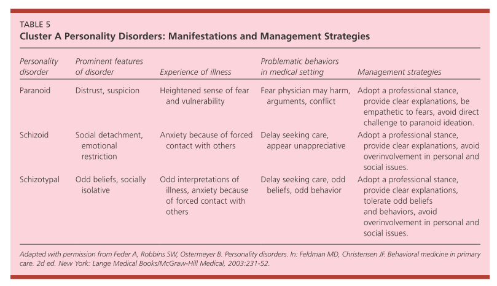
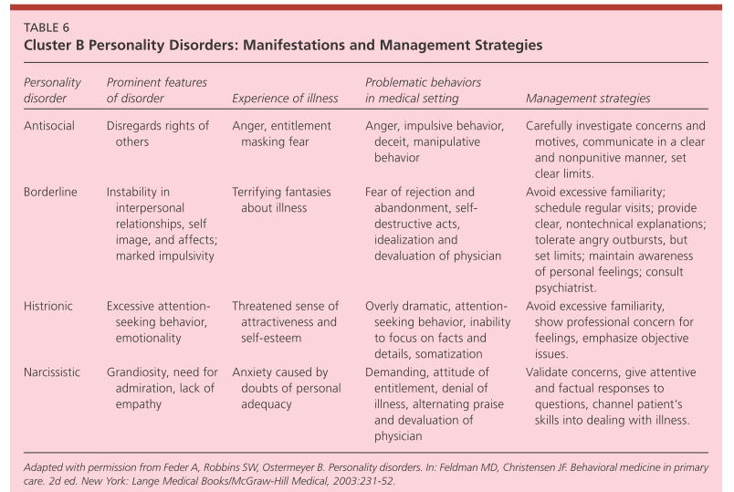
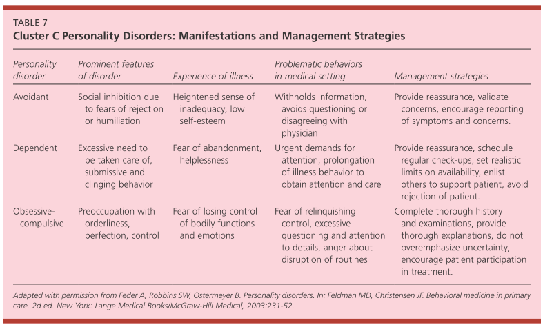

Chapter 9: The patient who has personality issues
Definitions
Epidemiology
Etiology
DSM-5 Criteria for Personality Disorder
Screening questions
Cluster A
Cluster B
Cluster C
What is expected of a primary care clinician?
When to refer to a specialist?
Primary care management
Self directed learning material
The understanding of personality and its disorders distinguishes psychiatry fundamentally from all other branches of medicine.
Definitions
Personality = what sets us apart from others
Personality traits = enduring pattern of behaviour and inner experiences
Personality disorder
- enduring pattern of behaviour and inner experiences
- significantly deviant from his/her culture
- pervasive, maladaptive and presence in a broad number of setting
- begin from adolescence
- stable over time
- lead to unhappiness or impairment
- often lack insight about their problems = as symptoms are ego-syntonic
Ego-syntonic = Ego-syntonic refers to feelings, thoughts, and/or behaviours that are acceptable to the self; that are consistent with one’s fundamental personality.
Epidemiology
- Prevalence 6-11% of population
- predisposing factors for various other disorders
- Approx 50% psych patient have a personality disorder
- Significant co-morbidity with other psych disorders
Etiology
- Biological, genetic, and psychosocial factors during childhood and adolescence contribute to the development of personality disorders.
- The prevalence of some personality disorders in monozygotic twins is several times higher than in dizygotic twins.
DSM-5 Criteria for Personality Disorder
- Enduring pattern of behaviour and inner experiences which is significantly deviant from his/her culture manifested as (in 2/4) - CAPRI
- C - Cognition - How you view self and people?
- A - Affectivity - How you reaction emotionally to difficult situations in life?
- PR - Personal Relations - How you relate to people?
- I - Impulse Control - Control over impulses?
- pervasive, broad range of situations
- begin from adolescence
- stable over time
- lead to unhappiness or impairment
- rule outs = not accounted for by another mental/medical illness or by use of a substance
Screening for Personality Disorder
When to consider possibility of personality disorder
- Acute stress, inappropriate demands, disproportionate anger, frequent conflicts
- Recurring symptoms of mood or anxiety disorder
- Self-harm
- Problem substance abuse
- Medically unexplained symptoms
- "Difficult" encounters
Screening questions
- Since a young age we develop characteristic ways of thinking, feeling and behaving.
- Can you identify particular patterns that have caused significant problems in social and work life?
- C- Such as how you think about self and others?
- A - How you feel in response to difficult situations?
- PR - How you relate to people?
- I - Do you often act impulsively?
If the patient screen positive for basic criteria then try to define sub-type(s)
Cluster A personality Disorders
- Characterization
- odd or eccentric
- no meaningful social relationships
- genetic association with schizophrenia
- Types
- Paranoid
- excessive distrust and suspiciousness
- Schizoid
- voluntary social withdrawal
- content with social isolation (vs. avoidant)
- limited emotional expression
- Schizotypal
- eccentric appearance
- odd beliefs or magical thinking
Cluster B personality Disorders
- Characterization
- dramatic, emotional, or erratic
- genetic association with mood disorders and substance abuse
- Types
- Antisocial
- disregard for and violation of rights of others with lack of remorse
- criminality
- males > females
- conduct disorder if <18 years
- related concept - "psychopathy"
- classic triad - set fires, torture animals, bed wetting
- Borderline [on the border b/w neurosis and psychosis] - 5/9
- 1 chronic
- feelings of emptiness
- 3 recurrent
- fear of abandonment
- suicidality
- paranoia / dissociation
- 5 unstable
- self-image
- anger
- affect
- impulsivity
- relationships
- females > males
- splitting is a major defence mechanism = relationships are either all good ("my boyfriend is a perfect angel") or all bad ("my boyfriend is evil and I hate him")
- Histrionic
- excessive emotionality and attention-seeking
- sexually provocative
- overly concerned with appearance
- Narcissistic
- grandiosity
- need for admiration
- sense of entitlement
- demands "the best
- lacks empathy
- reacts to criticism with rage
Cluster C personality Disorders
- Characterization
- "Worried"
- Anxious or fearful
- genetic association with anxiety disorders
- Types
- Avoidant
- hypersensitive to rejection
- socially inhibited
- feelings of inadequacy
- desires relationships with others (vs. schizoid)
- Obsessive-compulsive
- preoccupation with order, perfectionism, and control
- ego syntonic vs. OCD which is ego dystonic
- Dependent
- submissive and clingy
- excessive need to be taken care of
- low self-confidence
What is expected of a primary care clinician?
- Consider possibility of personality issues in difficult encounters
- Assess suicide risk.
- Practice limit setting
- Be self-aware and control countertransference to focus on the clinical issues
- Appropriate primary care management of depression, anxiety or substance use
When to refer?
- Management of self-harm risk.
- For access to specialist psychological treatment such as CBT or dialectical behaviour therapy (DBT).
- For detailed assessment of personality disorder traits and approach to medical care in complex presentations.
Primary care management
- Establish a stable, supportive relationship with patient.
- Acutely, may need to explore suicidality and assess risk.
- Psychotherapy and other psychosocial interventions can help patients with relationship issues, to confront fears, cope with trauma, deal with dysfunctional thoughts, e.g. CBT, mindfulness, dynamic psychotherapy, dialectical behaviour therapy, mentalisation-based therapy, transference- focused psychotherapy. This would usually require referral.
- Psychotropic medication treatment is not generally recommended. However, depression and anxiety when co-morbid is treated with SSRI antidepressants. Off licence low dose antipsychotic treatment with olanzapine (2.5–5 mg) or quetiapine (25–50 mg) is sometimes used as a short-term prescription to help emotional regulation in crises although a safer alternative would be low dose promethazine (25–50 mg). Quasi-psychotic symptoms may sometimes require treatment with low dose antipsychotics.
- Patient communication and relationship management strategies [as described in tables below]
- Substance abuse, particularly alcohol abuse, is often co-morbid and requires treatment.



Self directed learning material for personality disorders
1. Movies [you may suggest Indian movies to us]
Personality Pathology- Cluster A
Remains of the Day (Schizoid PD)
Taxi Driver (Schizotypal PD)
The Caine Mutiny (Paranoid PD)
The Treasure of Sierra Madre (Paranoid PD)
Personality Pathology - Cluster B
Fatal Attraction (Borderline PD)
Play Misty for Me (Borderline PD)
Frances (Borderline PD)
After Hours (Borderline PD)
Looking for Mr. Goodbar (Borderline PD)
Bullets over Broadway (Histrionic PD)
Gone with the Wind (Histrionic PD)
A Streetcare Named Desire (Histrionic PD)
A Clockwork Orange (Antisocial PD)
Narcissism
All that Jazz
Stardust Memories
Zelig
Jerry Maguire
Alfie
Shampoo
American Gigolo
Citizen Kane
Lawrence of Arabia
Patton
Personality Pathology - Cluster C
Zelig (Avoidant PD)
Sophie's Choice (Dependent PD)
The Odd Couple (OCPD)
2. ADMSEP self-directed learning module on "personality disorder" Link
Bibliography
1. First Aid for the Psychiatry Clerkship 5e
2. Synopsis of Psychiatry 11e.
3. Carlat, Daniel. The Psychiatric Interview. Wolters Kluwer Health. Kindle Edition.
4. Nussbaum A. DSM-5 Diagnostic interview.
5. Step1.medbullets.com
6. Wang W. Comprehensive Psychiatry Review.
7. Ward RK. Assessment and management of personality disorders. Am Fam Physician. 2004 Oct 15;70(8):1505-12. PMID: 15526737.
Created with the Personal Edition of HelpNDoc: Full-featured multi-format Help generator